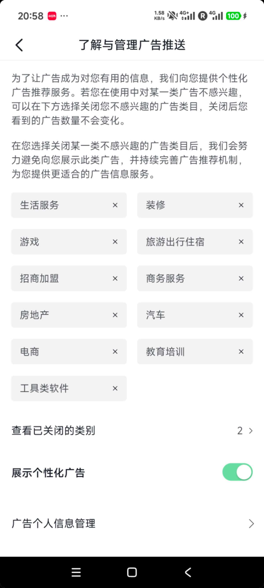

Week 02
Building my first website
Creating a portfolio with HTML, CSS and GitHub Pages.
Read reflection for Week 2COMM5020M · Learning journal
Exploring data, media and communication through weekly practice and reflection.
Explore my reflectionsWhat I made, what challenged me, and what I learned.
Week 02
Creating a portfolio with HTML, CSS and GitHub Pages.
Read reflection for Week 2
Week 03
Extracting programme titles and learning how selectors work.
Read reflection for Week 3Week 04
Considering privacy, missing data and the choices behind categories.
Read reflection for Week 4
Week 05
Reflecting on chart choices, multiple responses and comparisons across sources.
Read reflection for Week 5
Week 06
Reflecting on Douyin's advertising categories, classifying friends' posts and who defines our digital identities.
Read reflection for Week 6About this portfolio
I will use this website to share my work and reflections.
I'm building this portfolio with HTML and CSS to develop my web development skills, alongside my studies in data, media and communication.
COMM5020M: Data in Action: Methods, Analysis, and Visualisation